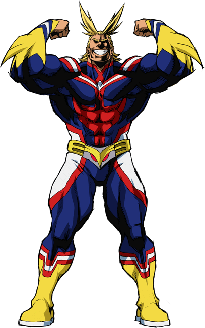
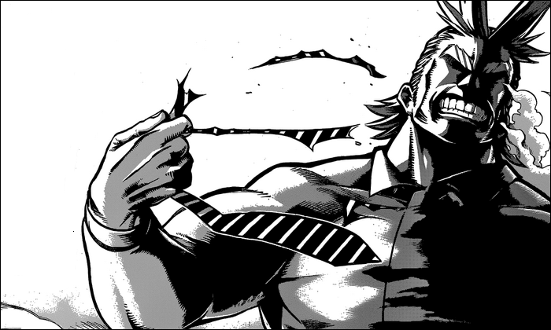

All Might
Имя: Яги Тошинори, "Всемогущий", "Символ мира" Происхождение: Boku no Hero Academia Уровень сил: 8 Пол: Мужской Классификация: Бывший профессиональный герой №1 Возраст: Неизвестно Умения, силы и способности: Сверхчеловеческие физические характеристики Слабые стороны: Использование причуды ограничено по времени; Разрушительный потенциал: Уровень холма+ Диапазон: Ближний бой; сотни метров c ударными волнами Прочность/защита: Уровень холма+ Скорость: Высокая гиперзвуковая (32 мах+) Сила на подъём: Тысячи тонн; вероятно гораздо выше Сила на удар: До уровня холма+ Выносливость: Сверхчеловеческая с причудой; низкая в обычной форме Интеллект: Выше среднего Боевые навыки: Очень высокие; ни разу не был побежден
「Профессиональный герой」 — статус человека, защищающего общество от злодеев и различных других бедствий. Герои проходят обучение в узкоспециализированных академиях, где учатся всему необходимому для осуществления своей работы: эвакуация людей, командная операция, усиление причуд и тому подобное. Герои нанимаются обществом и получают огромную заработную плату, зависящую от популярности у людей. При помощи средств массовой информации, герои для людей представлены некими идолами, воодушевляющими их на свершение подвигов. Тошинори является сильнейшим и самым популярным героем во всём мире. Физическая подготовка — профессиональные герои прошли строжайшие физические тренировки, в процессе усилив свои причуды и физическую форму. Сюда же и входят дуэли против самых разношёрстных противников. В обычной форме, вероятно, Тошинори не сильнее обычного человека, из-за смертельного ранения, но под действием причуды он настолько силён, что способен принимать атаки, разрушающие городские кварталы и может наносить соответствующий урон. Боевой опыт —Yagi toshinori 3.png профессиональные герои на протяжении всей деятельности практикуются в противостоянии злодеям и другим бедствиям. На исполнении своего долга, герои постоянно оттачивают свою технику ведения боя и спасения людей, приобретая уникальный опыт. Тошинори, как опытнейший герой, у которого десятки лет стажа работы, наработал боевой опыт против самых различных злодеев. Пройдя бои различной тяжести, Тошинори не разу не выходил проигравшим. Рукопашный бой — Тошинори искусно дерётся в ближнем бою, он даже сумел выработать свой стиль боя, основанный на применении ударных волн. Символ мира — Тошинори настолько харизматичен, что у простых людей он вселяет желание становления героем и уверенность в общественной стабильности, а злодеям внушает неподдельный страх. Одно лишь существование Всемогущего поддерживает порядок в обществе. Тошинори всегда идёт до победного конца, ведь на свете существует столько вещей, которые он должен защитить. И вот почему он не проигрывает. Причуда — мутация, которая вызывает у человека развитие сверхъестественных способностей. Данная мутация называется "Плюс-Альфа", которая вторгает в организм целый механизм управления причудой. Наличие способности определяется по тому, есть ли у человека суставы на мизинцах ноги, если их нет, то такой человек однозначно обладает какой-либо сверхъестественной силой. Изначально Тошинори не владел причудой, но ему передали уникальную причуду - "Один за Всех".